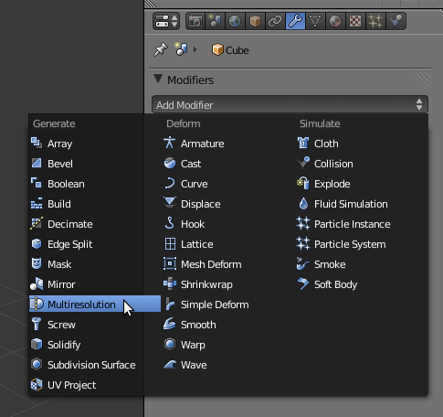
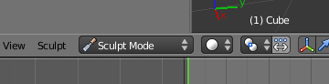
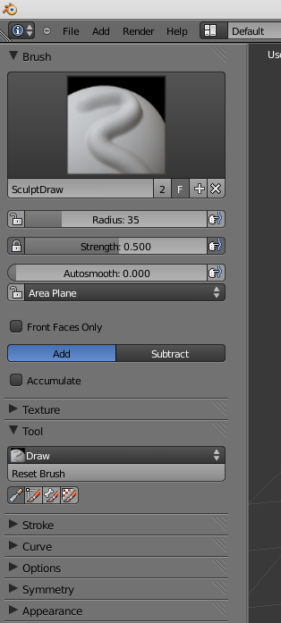
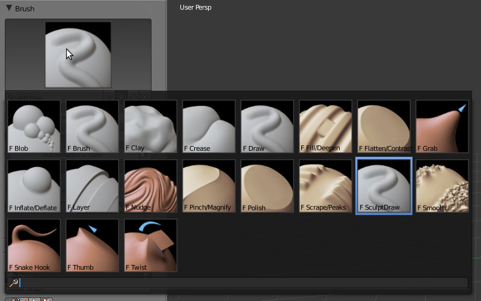

Blender – Sculpting
Duas considerações ou sugestões iniciais:
a) É muito comum a utilização de um workflow que implica começar com um objecto que tem as suas formas básicas já definidas de outro modo (por exemplo, box modelling) e utilizar o Sculpt para adicionar detalhes.
b) Como o grau de detalhe está relacionado com o desempenho do computador (quanto maior o grau de detalhe, mais exigente é o desempenho), sugere-se que resista à tentação de adicionar vários níveis de subdivisão desde o início e opte por ir adicionado novos niveis à medida que for necessário.
1- O modo Sculpting permite modelar com elevado grau de detalhe e liberdade. No entanto, também implica utilizar um elevado número de vértices para obter os melhores resultados. Para aumentar o número de vértices do cubo inicial, podíamos simplesmente utilizar a ferramenta Subdivide. No nosso caso, vamos utilizar uma forma mais dinâmica e sofisticada, vamos utilizar o modifier Multiresolution para aumentar a resolução do objecto (aumentar o número de vértices da malha).
Seleccione o cubo inicial. No painel Object Modifiers, adicione um modifier do tipo Multiresolution.
2- Adicione novos níveis de subdivisão, clicando no botão Subdivide. Na imagem abaixo, clicámos 3 vezes no botão mencionado criando 3 níveis de Preview, Scultp e Render. Pode adicionar ou remover (botão Delete Higher) níveis de subdivisão a qualquer altura. Atenção: sempre que aumentar os níveis de subdivisão, estará também a aumentar a exigência no desempenho do seu computador!
Preview: níveis de subdivisão utilizados na janela 3D quando não está em Sculpt Mode. Sugestão: diminua os níveis de Preview para que, quando não estiver a esculpir, o objecto não exiba o grau de detalhe esculpido e, consequentemente, ocupe memória, utilizando recursos desnecessariamente e afectando o desempenho do computador.
Sculpt: níveis de subdivisão utilizados quando estiver em Sculpt Mode.
Render: níveis de subdivisão utilizados quando renderizar.

3- Ainda com o cubo seleccionado, active o Sculpt Mode.
4- Na barra de Tools (T), deverá agora ver diversas opções e ferramentas relacionadas com o modo de trabalho Sculpting.
primeira janela permite-lhe escolher (clique na imagem situada perto do topo para abrir menu) e configurar algumas opções básicas relativas aos Brushes.
As opções principais de configuração não são sempre iguais, existe alguma variação de acordo com as características do Brush. No entanto, existem algumas opções básicas mais comuns:
Radius: define o alcance ou área afectada, dimensão do Brush. O botão do lado direito (dedo a pressionar linha azul) activa sensibilidade à pressão para tablets.
Strength: Intensidade do efeito, força do Brush. O botão do lado direito (dedo a pressionar linha azul) activa sensibilidade à pressão para tablets.
Autosmooth: Grau de suavização ou aplainamento aplicado. O botão do lado direito (dedo a pressionar linha azul) activa sensibilidade à pressão para tablets.
Add/Subtract: modo como o efeito do Brush é aplicado. Pode ser positivo (Add), “insuflando” o objecto, ou negativo (Subtract), “escavando” o objecto.
5- O menu de acesso rápido permite escolher entre diferentes tipos de Brushes.
Blob: Aplica um efeito esférico a uma área, faz crescer saliência esférica ou abre cratera.
Clay: Permite fazer encolher ou expandir uma área.
Crease: O Add belisca a malha para criar um pico/crista, o Substract vinca a malha criando uma reentrância tipo ruga ou vale.
Fill/Deepen: Funciona de forma similar ao Draw, o Fill preenche concavidades/reentrâncias e o Deepen afunda ainda mais.
Flatten/Contrast: Flatten alisa a área sob o ponteiro, Contrast exagera as diferenças.
Grab: Agarra uma área e move-a com o Brush.
Inflate/Deflate: Expande uma área insuflando-a (como um balão), o Deflate encolhe partes da malha.
Layer: É similar ao Draw mas pode definir uma altura (Height) para as linhas.
Nudge: Empurra áreas da malha ao longo da superfície.
Pinch/Magnify: Pinch puxa uma área para o meio do Brush, Magnify espalha a superfície.
Polish: Suaviza áreas da malha tentando preservar a forma.
Scrape/Peaks: escava/abre ravinas ou faz emergir elevações/montes na superfície
Sculpt/Draw: puxa a superfície da malha que está debaixo do ponteiro do rato para fora (Add) ou para dentro (Subtract). É o melhor Brush para desenhar linhas.
Smooth: Suaviza a superfície da malha.
Snake Hook:Similar ao Grab, permite puxar áreas criando arcos parecidos com tentáculos.
Thumb: Cria um efeito de atrito/fricção.
Twist: Move a área da superfície em espiral.
6- A barra de ferramentas permite ainda configurar diversos outros aspectos importantes. Por exemplo, o painel Options permite bloquear eixos (desactivar efeitos do Sculpting no eixo X, etc.) e o painel Symmetry permite esculpir de forma simétrica, em “espelho”.